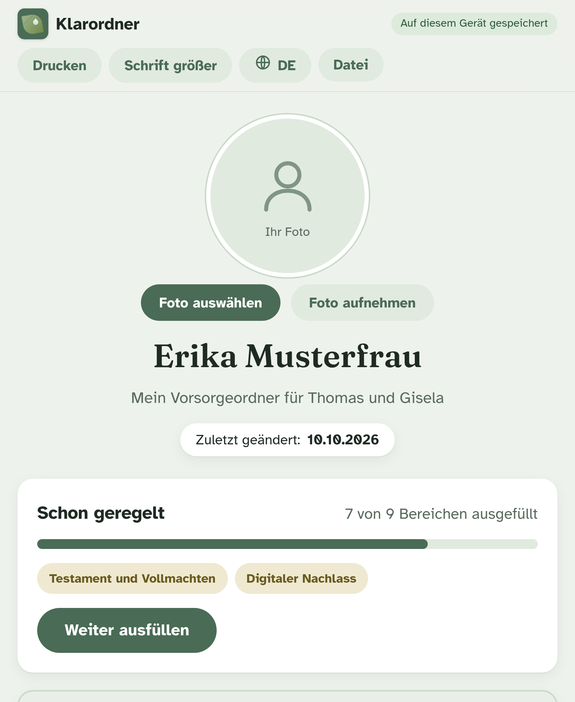
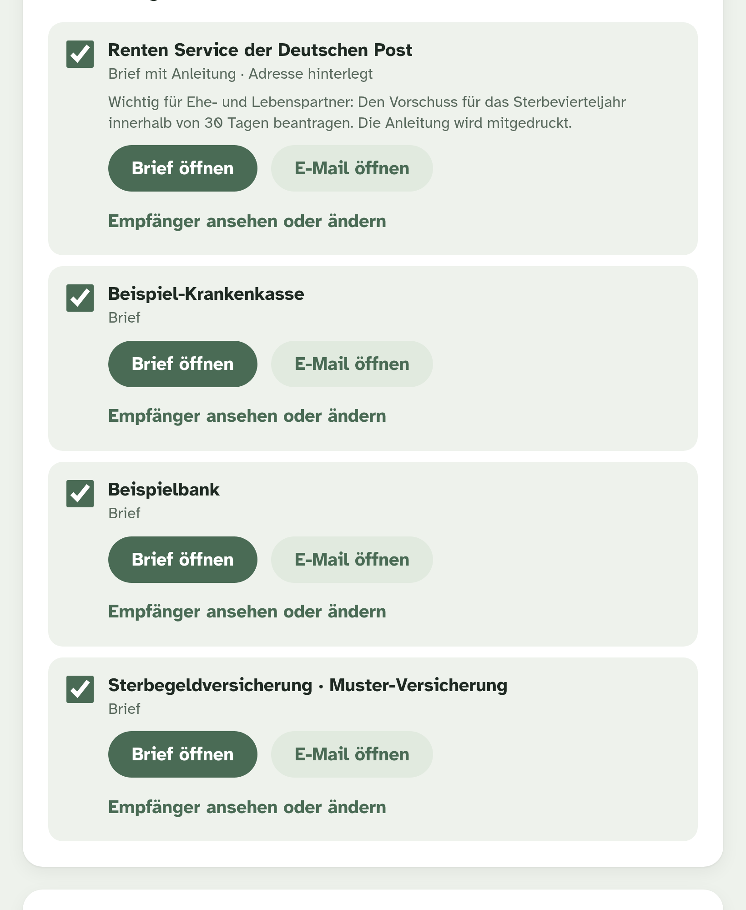

Neun ruhige Schritte, in großer Schrift, ohne Fachbegriffe. Am Ende liegt ein Ordner bereit, mit dem Ihre Familie im Ernstfall sofort handeln kann, bis hin zu den fertigen Briefen an Bank, Rente und Versicherung.

Für Trauer bleibt keine Zeit, denn die Fristen laufen vom ersten Tag an. Wer dann suchen muss, wo das Testament liegt und welche Verträge es gibt, verliert Wochen und oft Geld. Das meiste davon lässt sich heute in Ruhe vorbereiten.
Jeder Landkreis verteilt eine, kaum jemand füllt sie aus: zu lang, zu abstrakt, zu viel auf einmal. Klarordner geht einen anderen Weg.

Neun Bereiche, von den Ausweisen bis zur persönlichen Nachricht. Verträge und Policen fotografieren Sie einfach ab, Klarordner liest die Nummern aus.

Als vollständiger Ordner mit Deckblatt und Inhaltsverzeichnis, als PDF oder als Datei. Mit einem Klick sprechen alle Texte Ihre Angehörigen an.

Angehörige tragen Namen und Sterbedatum ein, öffnen jedes Schreiben als Brief oder E-Mail, unterschreiben, Sterbeurkunde beilegen, fertig.
So sieht eines der Schreiben aus, die Klarordner vorbereitet. Alles Markierte stammt aus Ihrem Ordner. Angehörige ergänzen nur ihren Namen und das Datum.
Sehr geehrte Damen und Herren,
hiermit teile ich Ihnen mit, dass Erika Musterfrau, geboren am 17.03.1952, Lindenweg 4, 12345 Beispielstadt, am 20.09.2026 verstorben ist. Eine Kopie der Sterbeurkunde liegt bei.
Bitte teilen Sie mir mit, welche Unterlagen Sie für die weitere Abwicklung benötigen, und senden Sie mir eine Aufstellung der Konten und Depots zum Todestag.
Mit freundlichen Grüßen
Thomas Musterfrau
Anlage: Kopie der Sterbeurkunde
Wer Sie sind und wo Ausweise, Urkunden und Stammbuch liegen.
Wer benachrichtigt werden soll, wer sich um was kümmert.
Wo die Dokumente liegen, wer handeln darf. Ohne Muster, ohne Rechtsberatung.
Banken, Depots, Vollmachten. Bewusst ohne PIN und Passwörter.
Welche Police eilt, welche nicht. Mit Adressen von 34 Gesellschaften.
Strom, Telefon, Abos, Mietvertrag, Schlüssel. Alles, was gekündigt werden muss.
E-Mail, Handy, soziale Netzwerke. Zugangsdaten verschlüsselt mit eigenem Passwort.
Bestattung, Grabart, Trauerfeier, Haustiere. Und eine Checkliste für die Familie.
Was Sie Ihren Liebsten noch sagen möchten. Als Text oder als Videobotschaft.
Sie wollen Ihren Angehörigen die schwerste Zeit erleichtern und endlich Ordnung in Unterlagen, Verträge und Wünsche bringen. In Ihrem Tempo, in großer Schrift.
Für mich vormerkenSie wissen nicht, wo bei Ihren Eltern das Testament liegt, und trauen sich nicht zu fragen. Klarordner macht aus dem schweren Gespräch einen gemeinsamen Nachmittag am iPad.
Für meine Eltern vormerkenKlarordner wird gerade fertiggestellt. Tragen Sie sich ein, dann erfahren Sie als Erste, wenn es losgeht. Als Dankeschön gibt es sofort die Checkliste für die ersten Tage nach einem Todesfall.
Wir melden uns, sobald Klarordner fertig ist. Bis dahin hilft Ihnen vielleicht schon unsere Checkliste.
Nichts. Klarordner ist kostenlos.
Nein, und das soll es auch nicht. Klarordner hält fest, ob es diese Dokumente gibt und wo sie liegen. Die Dokumente selbst erstellen Sie mit Notar oder Anwalt.
Klarordner wurde für Menschen gemacht, die sich mit Technik nicht beschäftigen wollen. Große Schrift, eine Frage nach der anderen, alles auf Deutsch. Wer ein Formular auf Papier ausfüllen kann, kann auch Klarordner ausfüllen.